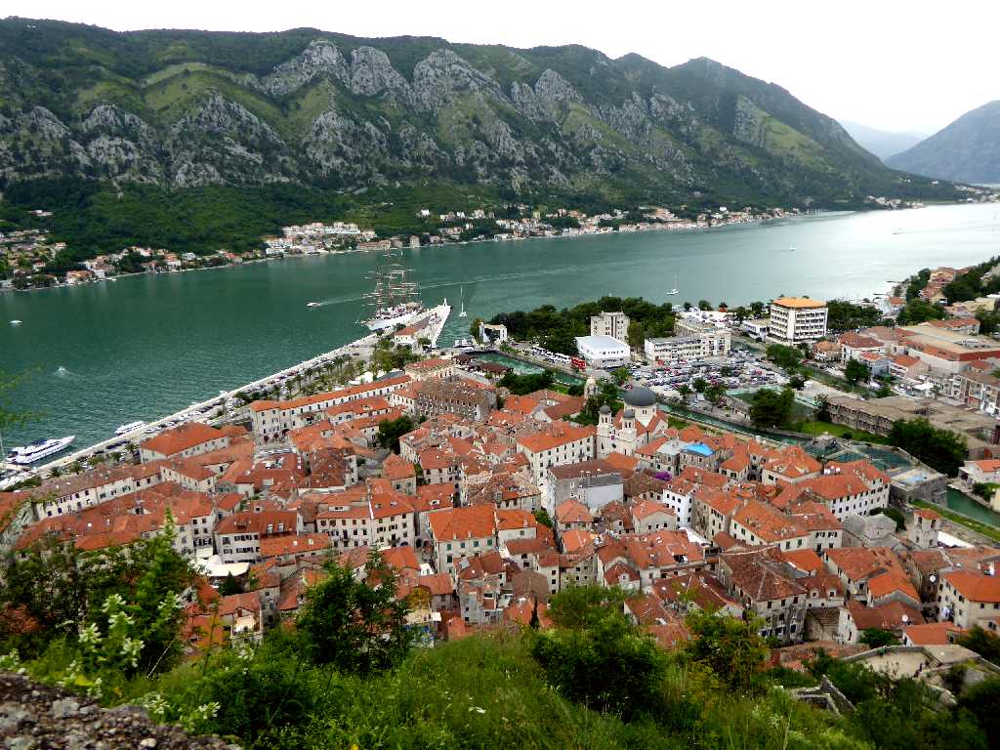
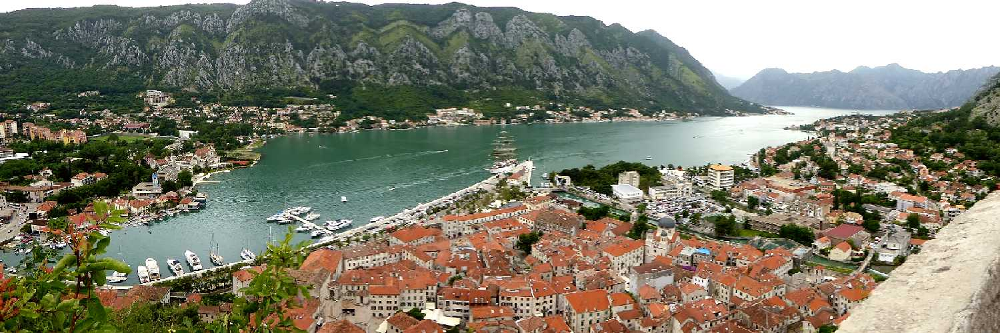
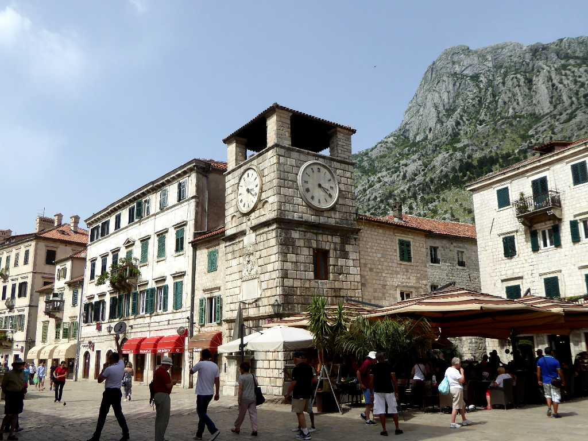
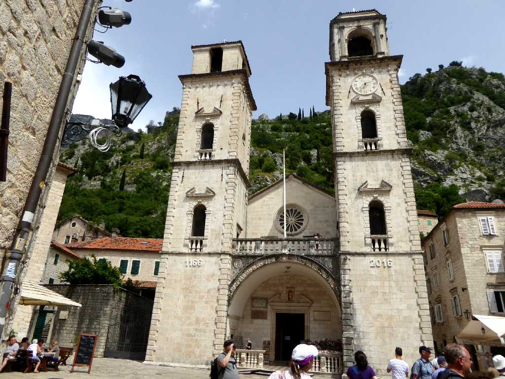
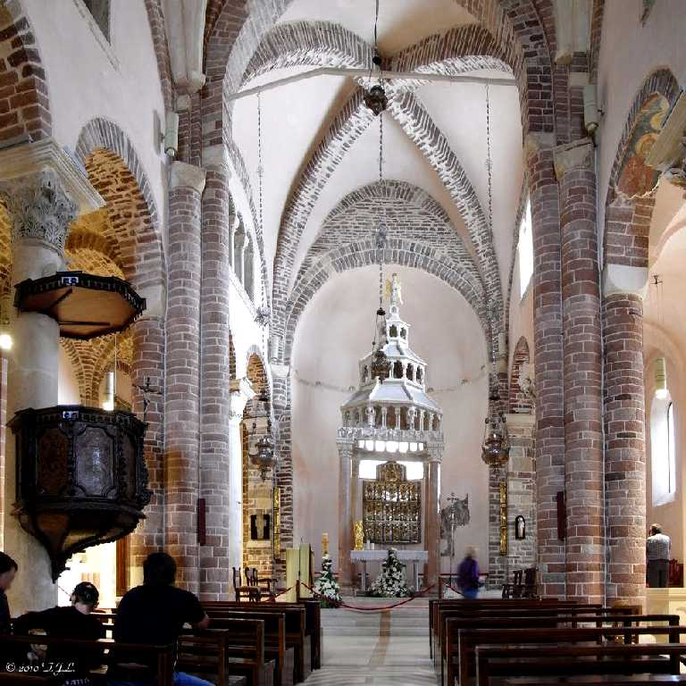
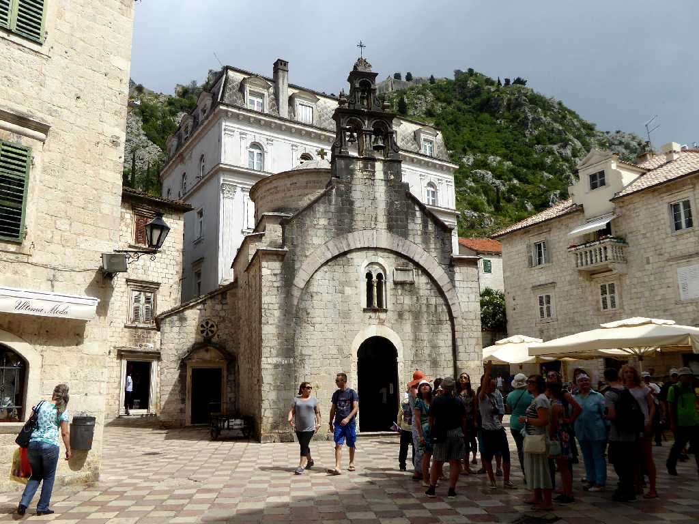
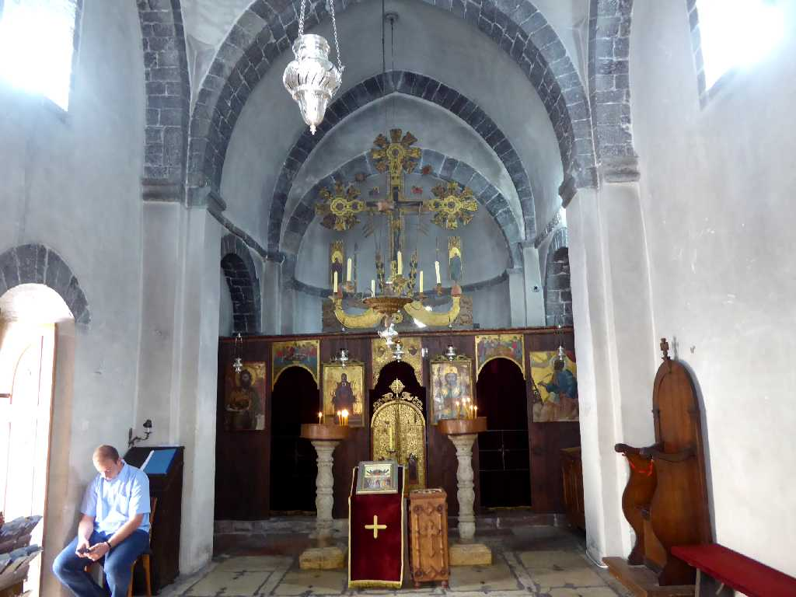
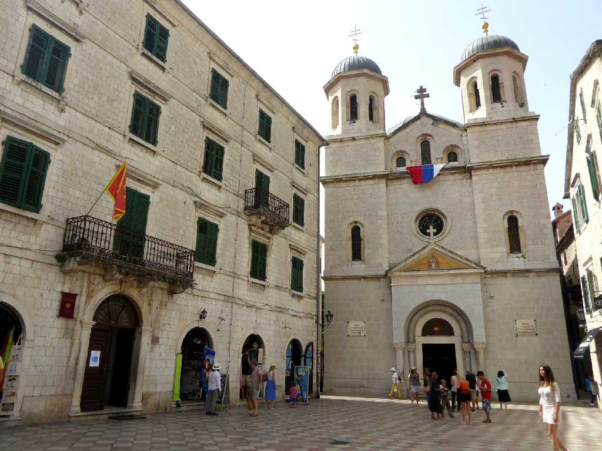
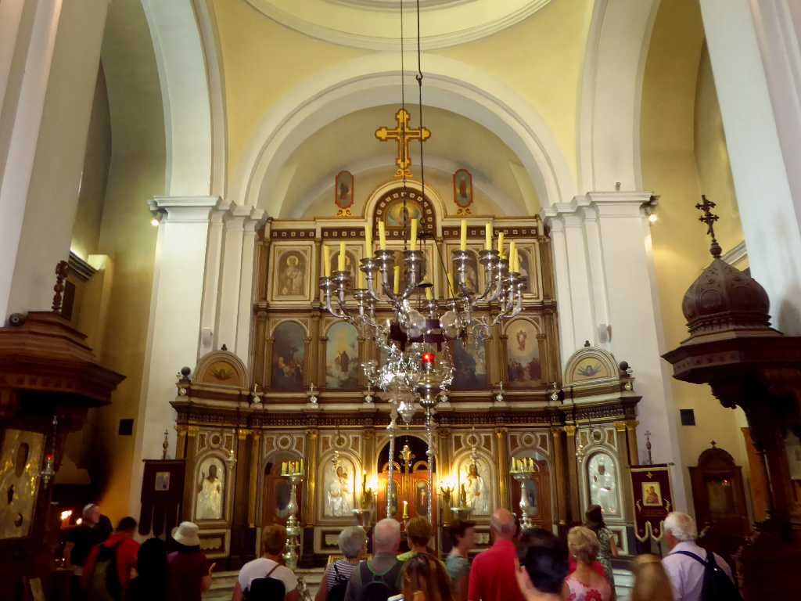
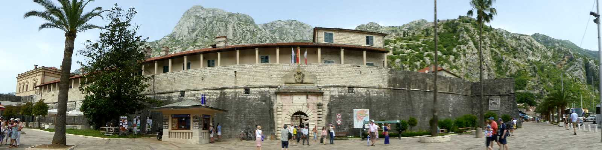

Kotor
街の記録が古代ローマの紀元前１６８年から始まる古都コトルの街並み

Kotor Bay
アドリア海のコトル湾にある天然の良港に恵まれたコトル

Clock Tower Kotor
城門を入ると目の前に現れる１６０２年に創られた中央広場の大時計

St. Tryphon Cathedral
１１６６年に創られた聖トリプン大聖堂

Altar St. Tryphon Cathedral

St. Luke Church
セルビア正教の聖ルカ教会

Altar St. Luke Church

St. Nicholas Church

Altar St. Nicholas Church

Gate Kotor
総延長４.5ｋｍある古代城壁
June 17 2016 Kotor